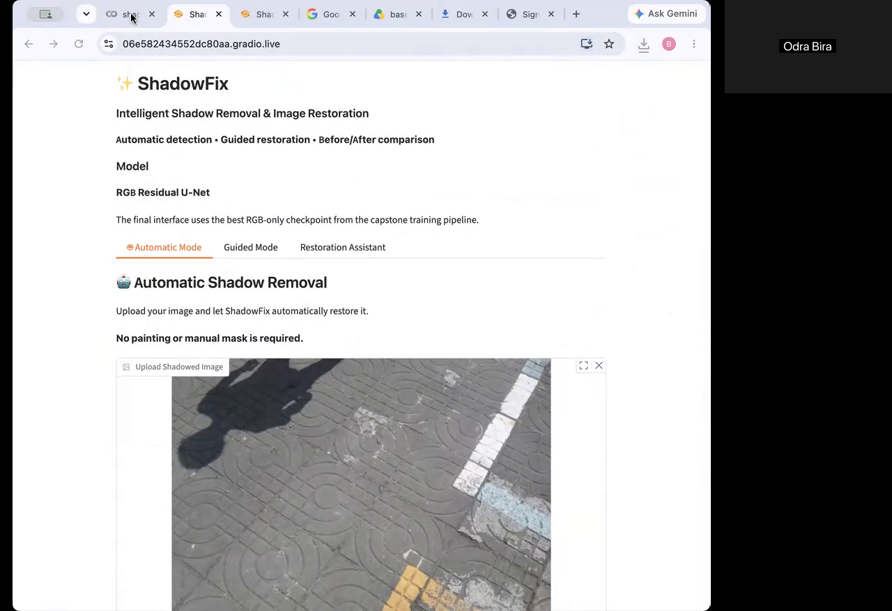

Computer Vision · Image Restoration · PyTorch
Shadow
Fix.
A comparative study of traditional correction, RGB U-Net, residual restoration and mask-guided U-Net for real-world shadow removal on the ISTD benchmark.
30.189PSNR · dB
.9514SSIM
+3.01dB vs RGB baseline


Evaluation before decoration.
The final comparison used 540 held-out ISTD triplets. Region-aware evaluation separated shadow and non-shadow performance instead of hiding model behavior behind one aggregate number.
My documented contributions included evaluation design, model-comparison analysis, Gradio interface testing, qualitative result selection and documentation review. Failure-case review was collaborative across the team.
Explore repository ↗More work